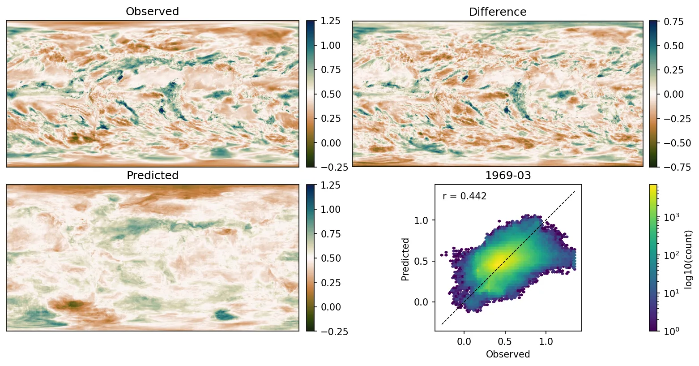
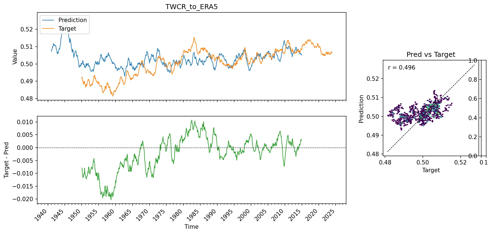

XGBoost model of ERA5 precipitation from TWCR surface variables¶
ERA5 is an excellent dataset, but it is not homogenous - much of its time-variability is a reflection of changes in the observing system, rather than real changes in the climate. 20CRv3 is less true-to-life than ERA5, but it is more homogenous, at least back to 1950.
So we’d like to combine the two datasets - to use the homogenous surface variables from 20CRv3 to constrain the precipitation in ERA5, and so to produce a more homogenous version of the ERA5 precipitation record. As a step towards this, we can fit an XGBoost model to predict ERA5 precipitation from 20CRv3 surface variables (temperature, pressure, humidity, wind, latitude, longitude, calendar month). We will train the model on data from 1990-2014 (so avoiding the biggest inhomogeneities in ERA5), and then see how well it extrapolates to the rest of ERA5.
The idea is to train a decision tree model that can estimate what the ERA5 precipitation would have been, if ERA5 were as homogenous as 20CRv3.

Validation plots for an XGBoost model trained to predict ERA5 precipitation from a set of 20CRv3 surface variables (temperature, humidity, pressure, latitude, longitude, calendar month). Left scatter plot shows performance on the training dataset, right scatter plot shows performance on the test dataset. (Figure source).¶

Precipitation field for one month as reconstructed by the model. (Figure source).¶
The time-series comparison is much more interesting. The model fits well over the training period (1990-2014), but deviates before this - with precipitation predicted by the decision tree model showing less long-term variability than the ERA5 precipitation. This is a sign of inhomogeneity in ERA5 - changes in the observing system are likely causing artificial variability in the precipitation record. The precipitation from the decision tree model doesn’t have these inhomogeneities, since the precipitation is calculated from the more homogenous 20CRv3 surface variables, and so the modelled precipitation is likely a more reliable estimate of the true long-term variability in global mean precipitation than the ERA5 precipitation.

Global mean precipitation time-series as predicted by the model. (Figure source).¶
And the extended stripes show that the decision tree model is to some extent successful in removing the large biases in ERA5 precipitation: The large discontinuity in 1980 and the large-scale drying in the 1950s and 1960s are both removed. The decision tree model is not perfect - it is much too wet in the mid 1940s, for the same reasons seen in the model trained to predict 20CRv3 precipitation from 20CRv3 surface variables, but we don’t expect it to work before about 1950, since the 20CRv3 surface variables are not reliable before this time.

Extended-stripes plots of precipitation. Top row - target (ERA5 precipitation), middle row - model prediction, bottom row - difference (Figure source).¶

{kind=link}
{kind=link}